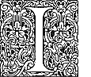
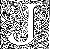
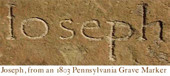

Old Style Handwriting and
Printers’ Ligatures, &c.
The Old “I” and the Young “J”

The letter “I” is old. It is a Roman letter. They had adapted the letter from the Greek
letter iota, however the origins of the letter can be found in the much earlier Phoenician alphabet. The Romans
version of the letter looks just like our modern “I.” The Romans had no miniscule (lower case)
letters, and in their alphabet, the letter “U” did not exist. We might then have expected to have seen the
name Julius Caesar look like
this : IVLIVS CÆSAR.

It was not until medieval times that the “J” appeared. It was the last
addition to our modern alphabet. Scholars were slow to add the letter to dictionaries and more
importantly, many civil record book sets omitted the letter “J” with books being
lettered A, B, C, D, E, F, G, H, I, K, L, etc. The clerks often would record “J” names
in the “I” names section of their record books. The “J” is one of only two majuscule
(capital or upper case) letters with a descender (the other being “Q”).

| |